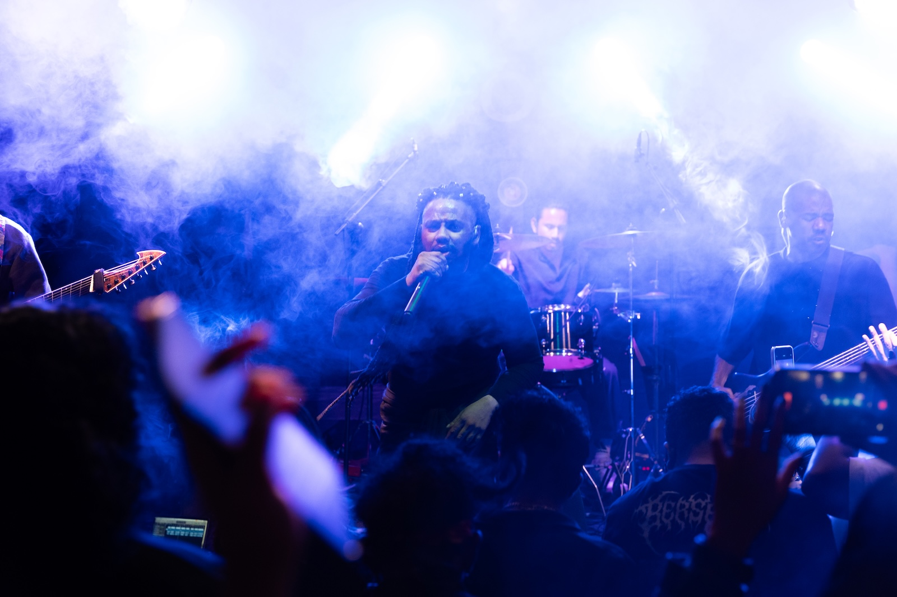
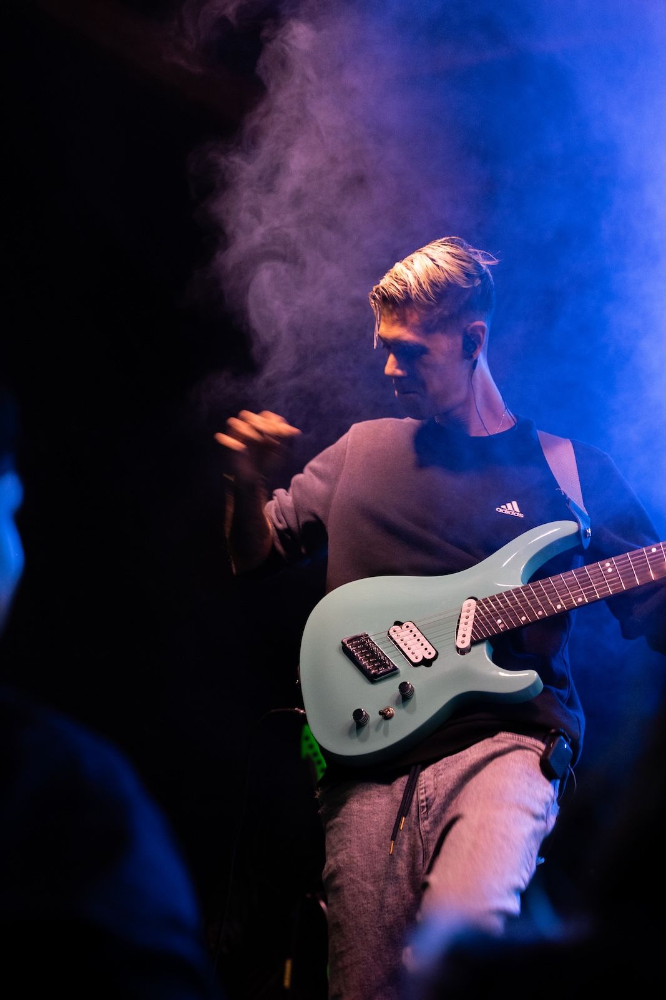
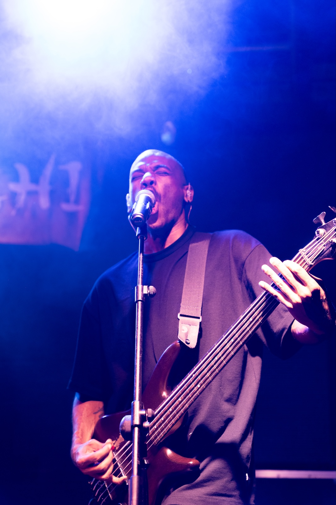
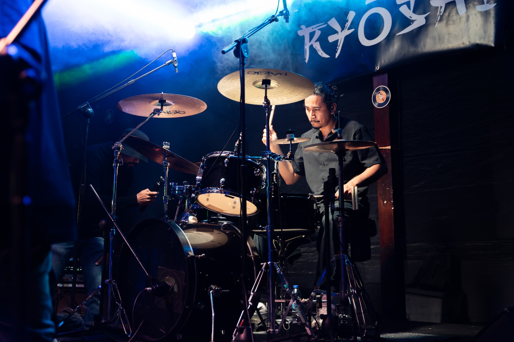
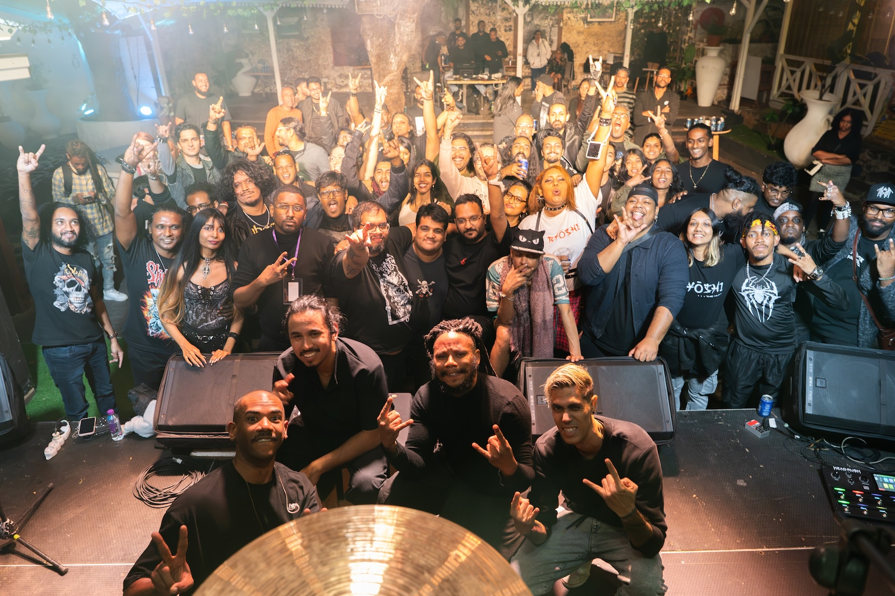

THE FORTH
KIND
A Night To Remember
Ryōshi celebrated the release of The Forth Kind alongside Amakartus, From The Storm and an incredible crowd.
On 29 August, the wait was finally over.
Following the release of The Forth Kind, Ryōshi took to the stage at Café du Vieux Conseil, Port Louis, for the first live performance of the new album.
And what a night it was.

The evening opened with powerful performances from Amakartus and From The Storm, setting the tone for what would become an unforgettable night of live music.
Then came Ryōshi.
With the energy building throughout the venue, the band brought The Forth Kind to life on stage, giving the audience their first opportunity to experience the new album beyond the recordings.


The response was incredible.
From the first note to the final moments, the crowd was fully immersed, bringing an energy that turned the concert into something bigger than an album launch. It was a shared experience between the band and everyone who came to be part of the night.

The Forth Kind is more than a new collection of songs. It marks a new musical direction for Ryōshi, exploring different styles, influences and atmospheres.
On this night, those songs finally found their home on stage.

To Amakartus, From The Storm and, most importantly, everyone who showed up and made the night what it was: thank you.
The album has been released.
The portal has opened.
And this is only the beginning.